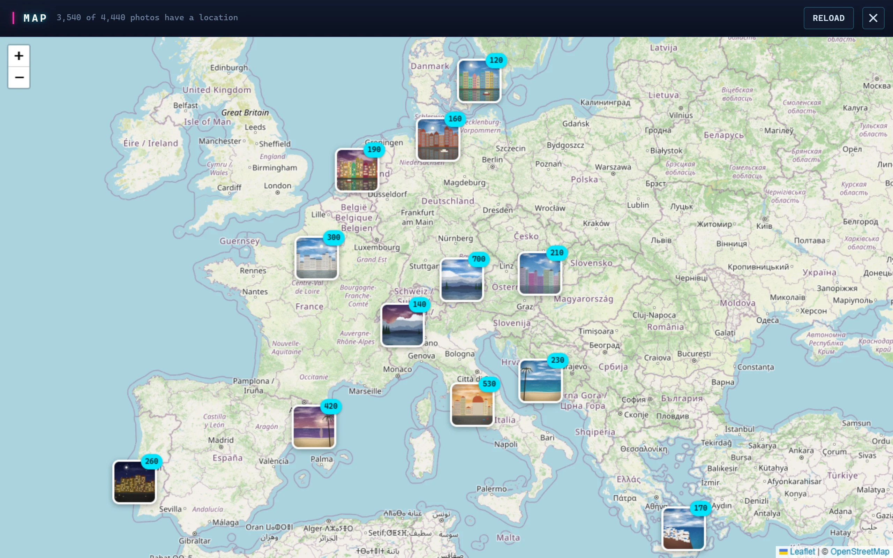
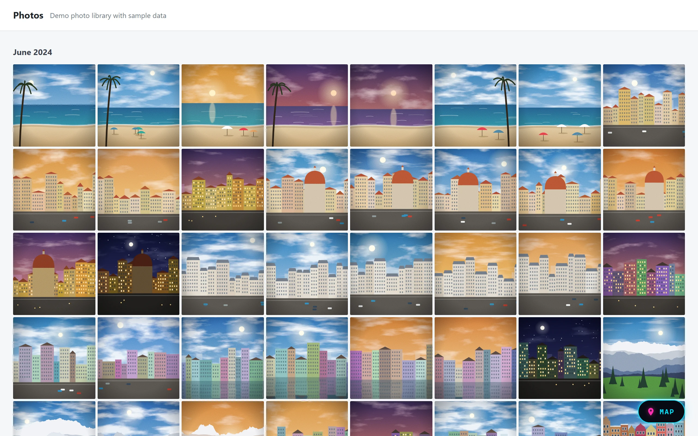
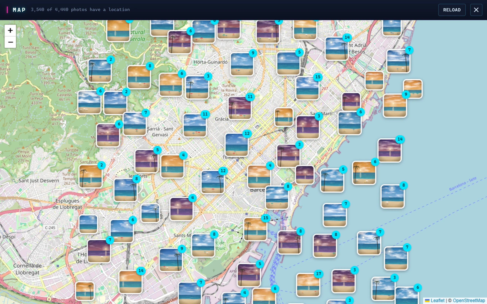
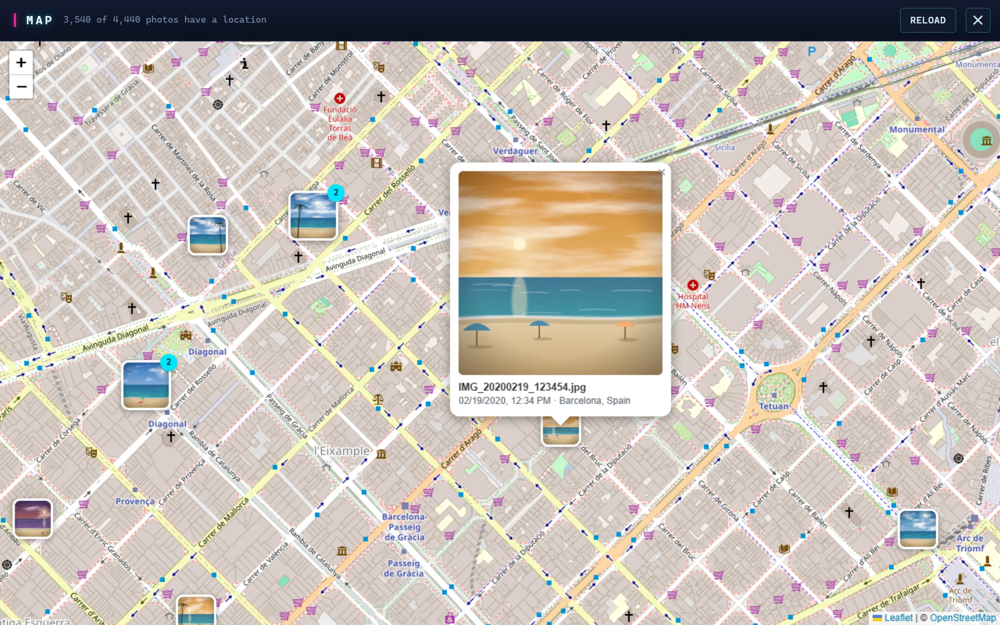
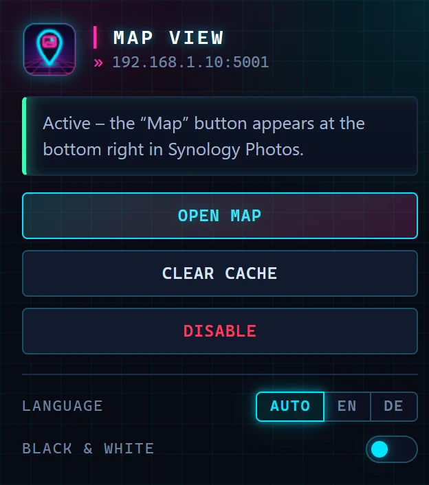

All your geotagged photos on one map
The Synology Photos apps have a map view – the web interface doesn’t. This extension adds it: one click on “Map” shows every photo with GPS data on an OpenStreetMap map – clustered, with thumbnails and without a second login.

What it looks like
All screenshots use demo data: generated sample scenes at real travel destinations, no real photos.



Features
Built for large libraries – tested with around 70,000 photos.
No second login
Uses the existing browser session. Everyone sees exactly the photos they can see in Synology Photos.
Clusters with previews
Photos close to each other are grouped – with a cover image and a count.
30-day cache
Locations and thumbnails are kept for 30 days – the map is there instantly the next time you open it.
Personal & shared
Loads the personal space and – if available – the shared space.
Minimal permissions
Access only to the NAS address you enabled the extension for – revocable at any time.
Robust loading
Failed requests are retried; an incomplete result is shown, but never cached.
How it works
The extension runs entirely in the browser. There is no server of its own – data only flows between the browser, your NAS and the OpenStreetMap tile servers.
Picks up the session token (SynoToken) and API path the app itself uses when the page starts.
Button & overlay, loads photos page by page, fetches thumbnails and map tiles.
Leaflet map with marker clusters. Receives photos, thumbnails and tiles via postMessage.
30-day cache for locations (per NAS and user) and thumbnails.
Enables the extension per NAS address and registers the scripts.
On your own NAS: photo list with GPS, thumbnails, user ID.
Map tiles. Loaded through content.js so the NAS address is sent as Referer.
- Enable: the popup grants access to exactly one NAS address; the content scripts are registered dynamically for that address only.
- Pick up:
page-hook.jsremembers token and API path from the Synology app’s own requests – no credentials needed. - Load:
content.jsfetches the photo list in pages of 500 entries (with retries on errors) and keeps every photo with GPS data. - Show: the map in the iframe clusters the photos and only requests thumbnails for the visible area.
- Remember: completely loaded locations and viewed thumbnails are cached for 30 days.
Stack
Deliberately lean: plain JavaScript without a build step and without npm dependencies. The folder can be loaded as an extension directly.
| Area | Technology | Details |
|---|---|---|
| Platform | Chrome extension, Manifest V3 | Chrome and Edge 111 or later |
| Language | JavaScript, HTML, CSS | No framework, no bundler, no build step |
| Map | Leaflet 1.9.4 + Leaflet.markercluster 1.5.3 | Bundled locally in vendor/ (BSD-2 and MIT) |
| Map data | OpenStreetMap tiles | Loaded through the content script so OpenStreetMap receives a Referer |
| Data source | Synology Photos Web API | Unofficial: SYNO.Foto.Browse.Item, SYNO.Foto.Thumbnail, SYNO.Foto.UserInfo, SYNO.FotoTeam.* |
| Sign-in | Existing browser session | Session cookie + X-SYNO-TOKEN (the app’s CSRF token) |
| Scripts | chrome.scripting.registerContentScripts | Dynamic per NAS; page-hook.js in the MAIN world, content.js isolated |
| Permissions | scripting, activeTab, storage, optional_host_permissions | Host access only after enabling it in the popup; storage only for the colour mode |
| Languages | chrome.i18n with _locales/ | English and German – automatically from the browser language or chosen in the popup |
| Messaging | window.postMessage | Content script ⇄ map iframe; sender and origin are checked |
| Cache | IndexedDB (extension origin) | Locations per NAS + user, small/medium thumbnails, valid for 30 days |
| Tests | Node.js + headless Edge via the DevTools protocol | End-to-end against a simulated Synology Photos; the same technique renders screenshots and icons |
Privacy & security
- No server of its own, no tracking. Photos and locations never leave the connection between browser and NAS.
- The only external requests: map tiles from OpenStreetMap – only the NAS address is sent as Referer.
- The cache lives in the extension’s database in the browser profile; the Synology page itself can’t read it.
- The map only answers pages the extension is enabled for – other websites can’t read it.
- “Clear cache” in the popup deletes all stored data immediately.
Installation
The extension is not in the Chrome Web Store (yet) and is loaded as an unpacked extension.
- Download the latest release from GitHub Releases (
maps-extension-for-synology-photos-vX.Y.Z.zip) and unpack it. - Open
chrome://extensionsoredge://extensionsand turn on Developer mode. - Click Load unpacked and select the unpacked folder.
- Open Synology Photos in the browser and sign in.
- Click the extension icon → Enable for this address → allow access.
- The page reloads – the Map button appears at the bottom right.
